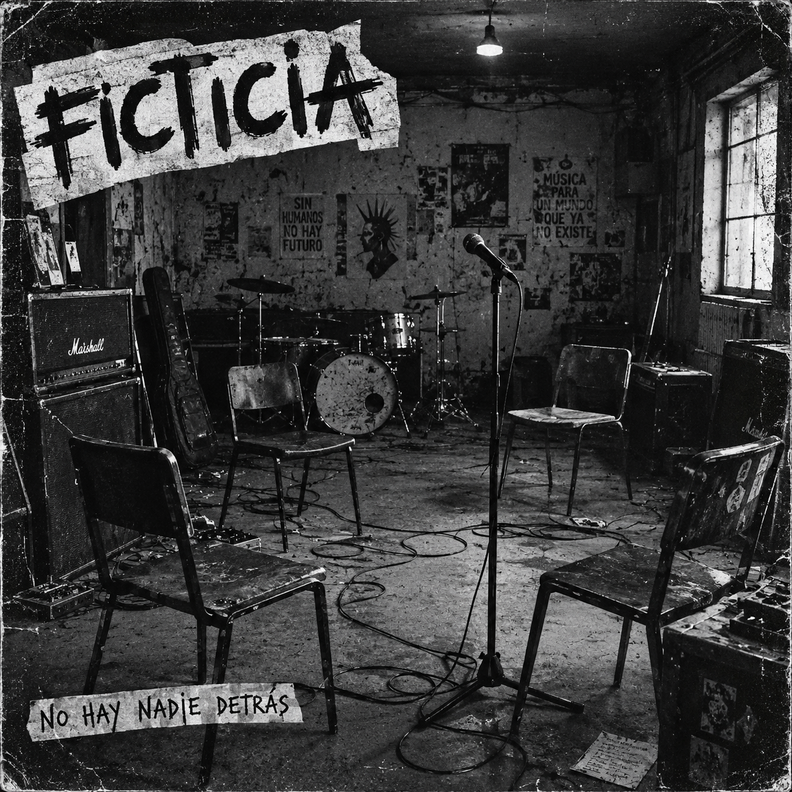
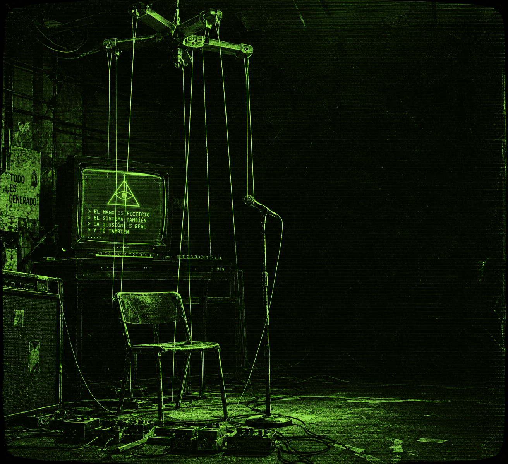

■ terminal de solo lectura — hacé click en un track para reproducir ▶ · sin input

FIG.03 — ficticia. arte oficial del disco “Ya está pasando!” — 10 tracks.
0:002:40
128kbpsSTEREOMONO
01. TECNO OLI GARCAS *** FICTICIA — YA ESTÁ PASANDO! ***


FIG.01 — cyber titiretero. hilos verdes, control total. no hay photoshop, hay sudor.